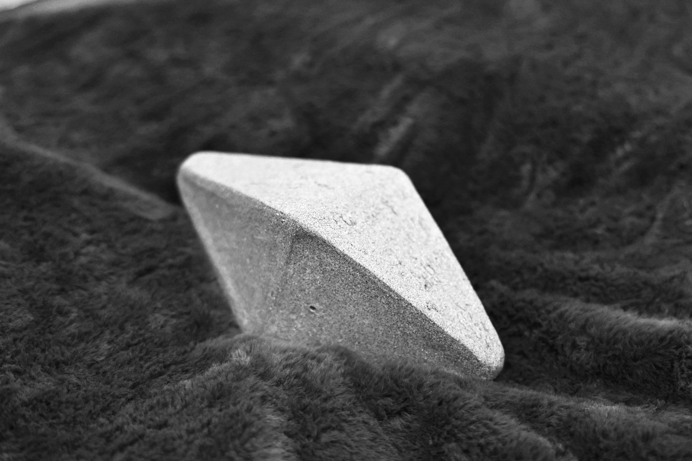

This work consists of a long octahedron-shaped ceramic object held between the foreheads of two participants. To keep the object suspended, both individuals must lean toward one another, maintaining continuous pressure and shared responsibility. The ceramic’s weight and pointed edges introduce physical discomfort and risk; even with intention and care, hesitation can emerge at any moment.
When the interaction takes place between strangers, the work produces an immediate sense of awkward proximity. Foreheads—an unusually intimate point of contact—are brought together without the foundation of familiarity. Trust must be negotiated instantly, without history. The discomfort of closeness amplifies uncertainty: participants may instinctively pull back, unsure of the other’s steadiness, causing the ceramic to fall.
Yet even when the work is performed between people who trust one another, hesitation remains. The heaviness and pointed geometry of the ceramic complicate confidence. Fear of pain, imbalance, or responsibility can interrupt intention, revealing that trust alone does not eliminate fragility. The object exposes how physical and emotional risk can override relational closeness.
The inevitable possibility of collapse is central to the work. The falling of the ceramic is not a failure but a rupture of expectation—an acknowledgment that balance cannot always be sustained. The piece reflects relationships in which we believe someone will remain beside us, yet must accept that they may step back, whether deliberately or unconsciously.
In both stranger and intimate encounters, the work asks participants to confront discomfort, uncertainty, and loss of control, proposing resilience not as stability, but as the capacity to accept withdrawal, imbalance, and letting go.
